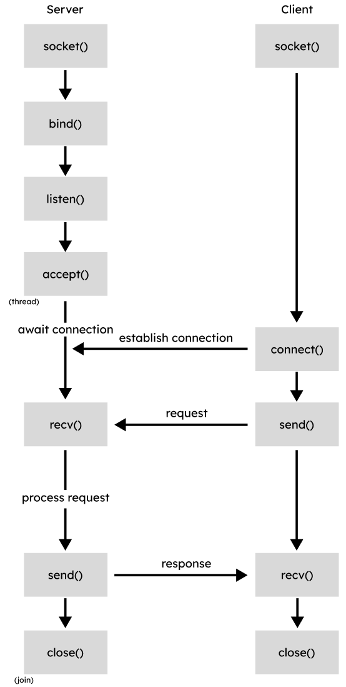

Network programming is essentially inter-process communication, where one program that you create interacts with another program you (or someone else) created. This program may be running on the same device, or may be running across the world. This is a complex challenge, and the solution is one of the most complete and complex software systems in the world.
There are a number of concepts that are worth reviewing to help with this lab:
Client
The client is the device (or application) which initiates the request, which will be handled by a server. These are typically (but not always) initiated directly by a user issuing a command.
e.g. a web browser, a time-lookup client (ntp), a dns-lookup client
Server
The server is the device (or application) which responds to requests made by clients. It is typically running all the time, and may run as a service in the background (i.e. a daemon). A client will initiate communication with server, and based on the selected protocol, send and/or recieve data from the server.
e.g. a web server, a dns server (bind), a time server, a game server
As single client may connect to a single server:

Or, multiple clients may connect to a single server:
Additionally, the server and client applications may be running on the save server, though this is not required:
Finally, note that a single application may act as a server, or a client, or both, however a single thread will typically only be acting as one or the other!
One of the reasons that a client server model is useful is that it minimizes the number of connections. Consider a first person shooter game with 100 people. In a client-server model, we would only need 100 connections - each client to the server. However, if instead we wanted every player to connect to every other player, we would need 99 connections for the first player + 98 more connections for the second player + 97 more connections for the third player, etc… This would be a much more complex system.
Address
An address is a way to uniquely identify which device is initiating a request. There are several types of addresses: public ipv4, private ipv4, ipv6, MAC, with different benefits and drawbacks depending on their usage. The simplest configuration of this is two devices on a Local Area Network (LAN), with each having a different IP address. Packets will be sent along ethernet, and accepted only by the host with the matching IP address
However, there are also more complex setups, such as a Wide Area Network (WAN) such as the internet, in which a connected series of routers will eventually deliver the packet to its destination.
Regardless of the complexity of the network, proper addressing ensures that packets get to their destination.
We can also access the device we are on using the localhost or loopback address 127.0.0.1.
Port
A port is a number which represents a connection on a device which may be used by a single application. A device has 65,535 total ports. By convention, some of these ports are allocated to particular services, e.g. 80 HTTP, 22 SSH, and 443 HTTPS. However, there are other ports which do not have associated services, and are safe to use for your applications. Typically these start above 1024. Because a port uniquely identifies an application, once a packet is recieved, the computer will then be able to know which program in particular is looking for that information.
e.g. on a server, an HTTPS web server will operate on port 443
e.g. on a client, Firefox may be running 6 different tabs on port 52197, 52198, 52199, 52200, 52205.
- When the first tab requests a web page, it will query the server (e.g. 142.196.3.7:443), and the returned address will be delivered back to the correct tab (e.g. 123.4.50.67:55657).
- This is important, otherwise, the returned information (a recipe for cookies) may get delived to the wrong tab (your youtube video on network programming) and thus interrupt your stream!
You may think of addresses like a street adress for an apartment, and a port like a suite number. Together we both learn which device we wish to reach, as well as which application.
Protocols
Protocols are the set of rules that dictate how devices on a network will interact with each other. For example, the TCP protocol favours reliability, wheras the UDP protocol favours speed. Depending on the protocol, a single transmitted message (“Hello World”), represented as bytes, may be broken up into a number of different packets, and even include some packets which are purely control information such as confirmations.
e.g. a very simple protocol in which we tell the server the length of the message, followed by delivering the actual message:
Socket
A socket is a bi-directional communication endpoint. Each of the two applications which wish to connect will create a socket, and connect to the other application’s socket. To create the socket we will need an IP Address, a Port and a Protocol. Once the socket has been established, the two devices may send data back and forth between the appliations.
Here is an example of different socket operations in python:

Packet
To make network communication more efficient, data may be split into smaller chunks, called packets. We will investigate this further in following labs.
Thread
A thread is the smallest part of a program which can run independantly. We can think of this as a single function which will be created and run independantly until it is completed. The advantage of threads is that their execution and scheduling is handled by the operating system to ensure that the system remains responsive, and so that other threads can finish in a timely manner. It is very advantageous to run server applications as threads, so that each request may be handled by an independant thread.
The trickiest part of threads is when data is shared between threads - as we cannot ensure the order in which lines of code execute in threads, this can lead to a race condition in some situations, with unpredictable results.
Consider a simple variable num_clients which counts the total number of connected clients, and the following two sequences of operation.
e.g. variable num_clients is shared by two threads client_a_handler and client_b_handler.
Happy case:
num_clients = 0
client_a_handler reads num_clients (0)
client_a_handler increments num_clients (1)
client_a_handler writes num_clients (1)
num_clients = 1
client_b_handler reads num_clients (1)
client_b_handler increments num_clients (2)
client_b_handler writes num_clients (2)
num_clients = 2
Race condition:
num_clients = 0
client_a_handler reads num_clients (0)
client_b_handler reads num_clients (0)
client_a_handler increments num_clients (1)
client_b_handler increments num_clients (1)
client_a_handler writes num_clients (1)
client_b_handler writes num_clients (1)
num_clients = 1
We can avoid this using semaphores (locks), essentially, this will prevent the second thread from reading the variable until the first thread is done with it.
With semaphores:
num_clients = 0
client_a_handler reads num_clients (0) and locks it
client_b_handler reads num_clients can’t, it’s locked, try again later.
client_a_handler increments num_clients (1)
client_b_handler reads num_clients can’t, it’s locked, try again later.
client_a_handler writes num_clients (1) and unlocks it.
client_b_handler reads num_clients (1) and locks it.
client_b_handler increments num_clients (2)
client_b_handler writes num_clients (2) and unlocks it.
num_clients = 2
Finally, it is sometimes important for your main thread to broadcast a message to each of your sub-threads. We can accomplish this using signals.
Encoding
Encoding and Decoding is the process of turning a string into a series of bytes. There are a number of different methods for this, such as ASCII or Unicode. ASCII uses only one byte per character, which is very efficient, whereas Unicode (UTF-8) requires one to four bytes per character, which python uses by default.